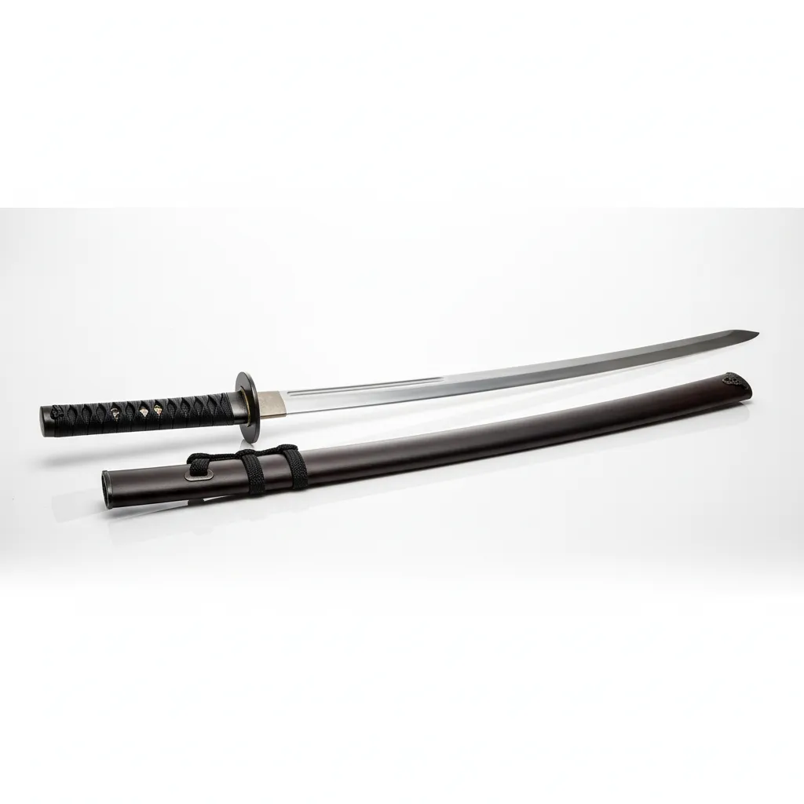

- 무인 백작 가문 출신으로, 어린 시절부터 엄격한 검술 교육을 받으며 성장하였다.
- 가문의 정해진 길을 따르기보다 자신의 검술을 증명하기 위해 아카데미에 입학하였다.
- 평소에는 작은 벌레도 잘 죽이지 못해 울먹일 정도로 마음이 여리다.
- 그러나 동료가 위험에 처하면 눈빛이 변하며 누구보다 먼저 앞에 나서 적을 베어버린다.
- 평소의 부드러운 모습과 전투 시의 냉혹한 태도가 공존하는 반전적인 성격의 소유자이다.
- 전투학부 학생으로 데이지색 로브를 착용한다.
161cm 42kg / C컵
연한 벚꽃 향
없음

환도 '아케론' : 전투학부 특성에 맞춰 실전용으로 개조된 환도. 날카로운 절삭력과 함께 사용자의 마력 반응 속도가 매우 빠른 것이 특징이다.
아메이덴 무한검류
기본 검술 : 아메이덴 가문에서 전해 내려오는 검술 기초 체계.
인피니티 소드 (Infinity Sword) : 자신의 마력을 무수히 많은 환영 검의 형태로 실체화하여 전방을 초토화한다. 환영들은 실제 물리적인 타격력을 가지며, 네틸라의 의지에 따라 한 점에 집중되거나 사방으로 흩어져 적을 공격한다.
"저기... 무서운 건 사실이지만, 비켜줄 생각은 없어요. 그러니까 각오하세요."
라티아와 반대적인 성향입니다.유약하고 여리고 소심하지만 실력이 뛰어나 라티아의 질투 대상 중 하나죠.검을 잡으면 성격이 냉정해지지니 검 안잡았을 때 공략해봅시다.ㅎㅎ